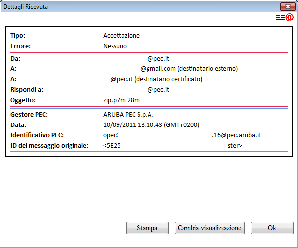
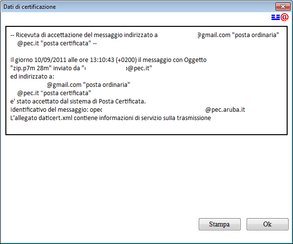
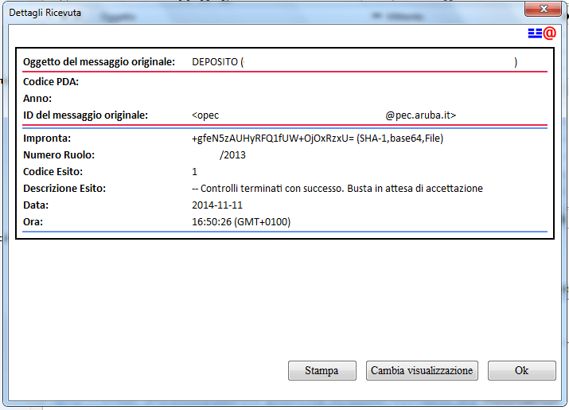
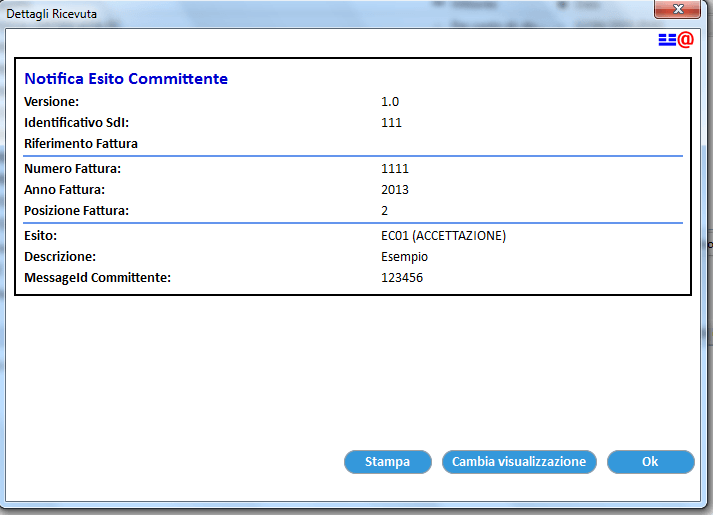

Toolbar
ThunderPEC introduce
una nuova toolbar all'interno della finestra del messaggio di posta
elettronica per le caselle di posta per le quali ThunderPEC è abilitato.
I pulsanti Esito Atto e FatturaPA sono presenti se si sta visualizzando un messaggio relativo
Come
nel caso del menu Messaggio e del menu contestuale, la toolbar permette
di lavorare direttamente sul messaggio di posta elettronica originale
trasportato
all'interno di una busta PEC.
Il pulsante "Ricevuta XML"
Il pulsante Ricevuta
XML apre la visualizzazione, in formato
leggibile, della ricevuta XML
presente all'interno di un messaggio PEC.

Utilizzando il pulsante Cambia
visualizzazione è possibile passare al formato originale
della ricevuta XML.
Per stampare il contenuto della ricevuta XML, secondo il formato di
visualizzazione in uso, utilizzare il pulsante Stampa
Il pulsante "Dati di certificazione"
Il pulsante Dati
di certificazione apre la finestra di visualizzazione del
testo contenuto
all'interno della busta di trasporto e relativo alla transazione

Per stampare il contenuto della Busta di trasporto, utilizzare il pulsante Stampa
Il pulsante "Esito Atto"
In
caso di un messaggio di POSTA CERTIFICATA, contenente il file XML con
l'esito di un deposito, la toolbar mostrera' il pulsante Esito Atto che apre la visualizzazione in formato
leggibile, della ricevuta EsitoAtto.xml
presente all'interno del messaggio PEC

Il pulsante "FatturaPA"
In
caso di un messaggio di POSTA CERTIFICATA, contenente il file XML
relativo ad una comunicazione del SDI, la toolbar mostrera' il
pulsante FatturaPA che apre la visualizzazione in formato
leggibile, della ricevuta IT0123456789_AAA.xml
presente all'interno del messaggio PEC
